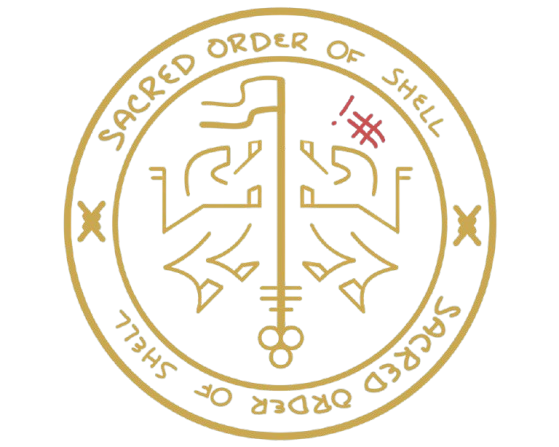

Sacred Order Of Shell
CTF Team
About
Sacred Order Of Shell is a competitive Capture The Flag (CTF) team passionate about cybersecurity, hacking, and learning. We participate in CTFs around the world and share our knowledge with the community.